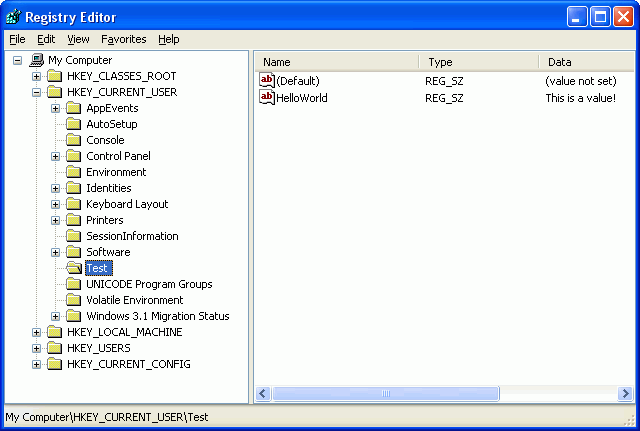
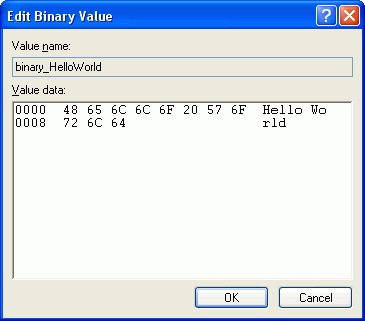

Working on the registry
Since version 5.0, RapidBATCH is also supporting directly access to the Windows-Registry. The "registry" is a a configuration and customization database provided by the Windows operating system family since Windows 95 and NT4. The major purpose of the Windows registry is to customize Windows, change system settings and to provide a possibility for programs and applications on the computer where they can save user- and system-dependend configuration informations and settings. Even the RapidBATCH Builder uses the registry to store e.g. the file history of the latest files or the tools provided in the Tools-menu in the menu bar.
The registry is edited using the program "regedit" which also is an inherent part of the Windows operating system. Run it by clicking Start -> Run and then type "regedit" and hit enter.
The registry is build on a Windows file system likely structure. There is a root, having five so called "pre-defined keys". These keys cannot be changed or modified. Registry keys are like folders in the Windows file system, and may contain subkeys or even values. Values can be seen as files when we compare the registry with the Windows file system.
Now, a short description of the five pre-defined keys in the registry's root. - HKEY_CLASSES_ROOT
This is a subkey of HKEY_LOCAL_MACHINE\Software. The information stored here ensures that the correct program opens when you open a file by using Windows Explorer. - HKEY_CURRENT_USER
Contains the root of the configuration information for the user who is currently logged on. The user's folders, screen colors, and Control Panel settings are stored here. This information is referred as a user's profile. - HKEY_LOCAL_MACHINE
This key contains configuration information is important for any user. - HKEY_USERS
Contains the root of all user profiles on the computer. HKEY_CURRENT_USER is a subkey of HKEY_USERS. - HKEY_CURRENT_CONFIG
Contains information about the hardware profile used by the local computer at system startup.
Using RapidBATCH, you can use the registry now without compromise. You can evenly use it to automate the change of settings and values of any other application or even for your script itself, storing e.g. user-dependend informations. You can create and delete keys, create and modify values and even delete them.
To create and delete a key, RapidBATCH provides the instruction NEWREGKEY and DELREGKEY. NEWREGKEY creates a new subkey, DELREGKEY deletes a subkey including all of its subkeys and values from the registry.
As parameter, both instructions expect a pre-defined main key identifier by specifing the values 'CLASSES_ROOT', 'CURRENT_CONFIG', 'CURRENT_USER', 'LOCAL_MACHINE' or 'USERS' for the particular key, as well as the path to the key that should be created newly. The following script generates a new key in HKEY_CURRENT_USER, that is named "Test".
rem create a new registry key
newregkey 'CURRENT_USER', 'Test'
if [errorcode] = '0'
echo 'Creating HKEY_CURRENT_USER\Test succeeded.'
else
echo 'Error when trying to create HKEY_CURRENT_USER\Test.'
endif
rem remove an existing key
delregkey 'CURRENT_USER', 'Test'
if [errorcode] = '0'
echo 'HKEY_CURRENT_USER\Test has been deleted successfully.'
else
echo 'Error when trying to delete HKEY_CURRENT_USER\Test.'
endif
It is important that the next higher key level of the key that should be created is existing, because NEWREGKEY does not create all keys automatically to reach its path if they do not exist, as it is the case at the MKDIR-instruction. There is no equivalency.
If you now want to save into or add a value to a key, RapidBATCH provides the instruction LETREGKEY. LETREGKEY supports three different data types that can be written, these are STRING, BINARY and DWORD. Additionally, the instruction expects the pre-defined main key identifier as it is specified at NEWREGKEY/DELREGKEY as well as the path of the key. Next to this, a labeling text for the new value is optionally required (if this is left blank, the value is saved into the key itself, which is also possbile). The last parameter is finally the value in the particular format. The next example creates a new value named "HelloWorld" under the key "Test" in "HKEY_CURRENT_USER" (the key is created again using NEWREGKEY before the value is added).
rem create testing key
newregkey 'CURRENT_USER', 'Test'
if [errorcode] = '0'
rem write a value to the registry
letregval 'string', 'CURRENT_USER', 'Test', 'HelloWorld', 'This is a value!'
rem has the value been saved successfully?
if [errorcode] = '0'
echo 'The value has been successfully written to the registry!'
else
echo 'Error when trying to write the registry.'
endif
endif

The value has been written successfully!
To write a binary value using LETREGVAL, the value has to be specified the same way as it is done at the PUTFILE-instruction: A list of ASCII character codes, separated by pipe-characters (or the as [std_sep] defined character). This example writes the string "Hello World" in binary form into the registry as the value name "binary_HelloWorld":
rem write a binary value into the registry
[hello] = '72|101|108|108|111|32|87|111|114|108|100'
letregval 'binary', 'CURRENT_USER', 'Test', 'binary_HelloWorld', [hello]
rem was the operation successfull?
if [errorcode] = '0'
echo 'The registry has been written successfully.'
else
echo 'Error when trying to write the registry.'
endif

An evidence "Hello World" has been written in binary order to the registry!
If you want to save a DWORD-value, you may only save numerical 32-bit integer values into the registry.
Reading from the registry is here equivalently done by using a function call GETREGVAL. Parameters are nearly the same like at LETREGVAL, except there is no value-parameter expected because this is returned by the function.
This example reads the two values we wrote above from the registry again:
rem reading a string value
getregval [text] = 'string', 'CURRENT_USER', 'Test', 'HelloWorld'
echo 'String value in "HelloWorld" is: ' # [text]
rem reading a binary value
getregval [data] = 'binary', 'CURRENT_USER', 'Test', 'binary_HelloWorld'
echo 'Read ASCII-list from "binary_HelloWorld": ' # [data]
rem convert ASCII-codes to ASCII-characters and build a string of these characters
[i] = '0'
repeat
[i] + '1'
gettok [char] = [data], [std_sep], [i]
if [char] ! ''
getchr [char] = [char]
[plain] # [char]
endif
until [char] = ''
rem output the plain text
echo 'Plain text converted from "binary_HelloWorld": ' # [plain]
At the end, we delete the registry values again using the DELREGKEY instruction that is used to delete any value from the registry.
rem remove "HelloWorld"
delregval 'CURRENT_USER', 'Test', 'HelloWorld'
if [errorcode] ! '0'
echo 'Error when trying to delete "HelloWorld"'
endif
rem delete "binary_HelloWorld"
delregval 'CURRENT_USER', 'Test', 'binary_HelloWorld'
if [errorcode] ! '0'
echo 'Error when trying to delete "binary_HelloWorld"'
endif
Copyright © 2000-2006 by J.M.K S.F. Software Technologies, Jan Max Meyer
All rights reserved.